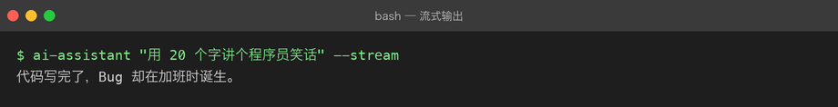
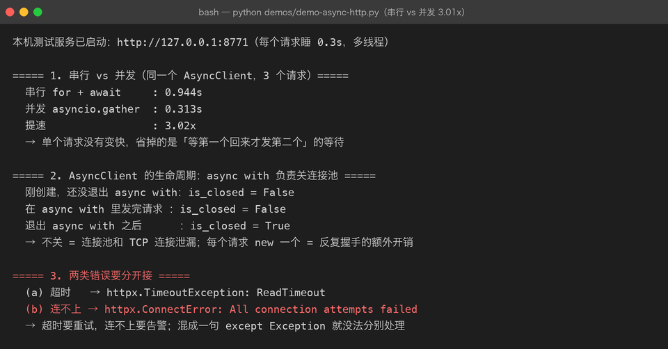

Project 02 — Chapter 02：Async HTTP Client【异步 HTTP 客户端】
本章 ↔
src/对照（校对时补：本章概念在真实代码里的落点） -src/assistant/client.py: DeepSeekClient— 用httpx.AsyncClient当长连接池（__init__创建、aclose()释放），不是每次请求新建一个 - 同文件_request()— 对429/ 超时做指数退避重试；分层 timeout（连接 / 读取分开设） - 同文件FakeClient— 与DeepSeekClient同接口（BaseLLMClient子类）的离线替身，测试用它不联网不花钱 -src/assistant/errors.py— HTTP 状态码被翻译成业务异常（LLMRateLimitError/LLMAuthError/LLMResponseError），上层不裸接 httpx 异常
1. 项目问题
上一章我们已经知道：
async / await
↓
Coroutine【协程】
↓
Event Loop【事件循环】
↓
可以处理异步 I/O但仅仅把：
def chat(...):改成：
async def chat(...):还不够。
因为真正的 AI 应用还需要解决：
连接怎么管理？
请求怎么发送？
超时怎么办？
HTTP 错误怎么办？
连接能不能复用？
多个请求怎么并发？
Client 什么时候关闭？因此本章目标是：
构建一个真正可复用的异步 LLM HTTP Client。
2. 从 Project 01 的写法开始
Project 01 可能是这种结构：
import httpx
def chat(messages):
response = httpx.post(
BASE_URL,
headers=headers,
json=payload,
timeout=60,
)
response.raise_for_status()
return response.json()现在升级为：
import httpx
async def chat(messages):
async with httpx.AsyncClient() as client:
response = await client.post(
BASE_URL,
headers=headers,
json=payload,
timeout=60,
)
response.raise_for_status()
return response.json()表面看只是：
httpx.post()
↓
client.post()
def
↓
async def
调用
↓
await但真正变化的是：
HTTP 请求现在成为异步 I/O 操作。
3. AsyncClient 是什么
httpx.AsyncClient
可以理解为：
一个专门负责异步 HTTP 请求的客户端对象。
它负责：
创建连接
↓
发送 HTTP 请求
↓
接收 HTTP Response【响应】
↓
连接管理
↓
连接复用
↓
资源释放所以：
client = httpx.AsyncClient()不是简单的：
“换一个 post 方法。”
它代表：
整个 HTTP 通信过程进入异步客户端模型。
4. 为什么不每次都重新创建 Client
最简单的代码：
async def chat(messages):
async with httpx.AsyncClient() as client:
return await client.post(...)虽然正确，但如果你的程序连续请求：
请求 A
请求 B
请求 C
请求 D每次都：
创建 Client
↓
建立连接
↓
发送请求
↓
关闭 Client会增加额外开销。
工程上通常更希望：
Application
↓
一个长期存在的 AsyncClient
↓
多个 HTTP Request这样可以利用：
Connection Pool【连接池】
5. Connection Pool【连接池】
假设：
你的 AI Application
↓
AsyncClient
↓
Connection Pool
┌────┼────┐
↓ ↓ ↓
Conn1 Conn2 Conn3
↓ ↓ ↓
LLM API Server连接池的核心思想：
已经建立的连接可以在多个请求之间复用。
联系描述：
应用层不需要每次都从零建立网络连接。AsyncClient 管理连接池，请求到来时优先复用已有连接；请求完成后连接可以继续保留给后续请求使用。这样可以减少重复建立连接带来的开销。
6. 生命周期管理
因此 Client 不能“随便创建、随便丢”。
需要明确：
Create【创建】
↓
Use【使用】
↓
Close【关闭】最简单的安全方式：
async with httpx.AsyncClient() as client:
response = await client.get(...)这里：
async with负责生命周期管理。
你可以把它理解成异步版的：
with open(...) as file:7. 为什么 async with 很重要
例如：
async with httpx.AsyncClient() as client:
...进入：
创建 / 准备资源离开：
释放资源即使内部发生异常，也会执行清理逻辑。
因此它特别适合管理：
- HTTP Client
- 文件
- 数据库连接
- 网络资源
8. Timeout【超时】
AI API 最大的问题之一：
网络可能永远等不到。
例如：
请求发送
↓
服务器迟迟没有响应
↓
程序一直等待因此工程代码必须设置：
timeout = 60例如：
timeout = httpx.Timeout(
connect=10.0,
read=60.0,
write=10.0,
pool=10.0,
)几个概念：
connect【连接超时】
建立 TCP / TLS 等连接阶段允许等待多久。
read【读取超时】
服务器迟迟没有返回数据时允许等待多久。
write【写入超时】
发送请求数据时允许等待多久。
pool【连接池超时】
等待连接池中可用连接时允许多久。
9. 为什么 AI API 的 read timeout 往往更重要
普通 API：
请求
↓
几十毫秒
↓
响应LLM：
请求
↓
排队
↓
模型推理
↓
生成 Token
↓
响应可能需要更长时间。
所以：
AI Request的超时策略不能简单照搬普通 CRUD API。
10. HTTP Error【HTTP 错误】
之前我们用了：
response.raise_for_status()它会把非成功 HTTP 状态转换成异常。
例如：
400 → 请求参数错误
401 → 身份认证失败
403 → 没有权限
404 → 资源不存在
429 → 请求过多
500 → 服务端错误因此不要写：
if response.status_code != 200:
print("出错")然后什么都不做。
更合理的是：
response.raise_for_status()再在上层统一处理。
11. httpx Exceptions【httpx 异常】
除了 HTTP 状态码异常，网络本身也可能失败。
例如：
httpx.TimeoutException
httpx.ConnectError
httpx.HTTPStatusError
httpx.RequestError这里要理解：
HTTPStatusError
服务器明确返回了 HTTP 错误状态。
例如：
429
500ConnectError
连接服务器失败。
例如：
DNS
网络
服务器端口
TLSTimeoutException
超过设定时间。
12. 推荐的 Client 层
现在开始把：
API Key
Base URL
Model
HTTP Request
Response Parsing集中到：
api_client.py例如：
import httpx
class LLMClient:
def __init__(
self,
api_key: str,
base_url: str,
model: str,
):
self.api_key = api_key
self.base_url = base_url
self.model = model
self.timeout = httpx.Timeout(
connect=10.0,
read=60.0,
write=10.0,
pool=10.0,
)
self.client = httpx.AsyncClient(
timeout=self.timeout,
headers={
"Authorization": f"Bearer {self.api_key}",
"Content-Type": "application/json",
},
)
async def chat(self, messages: list[dict]) -> dict:
payload = {
"model": self.model,
"messages": messages,
}
response = await self.client.post(
self.base_url,
json=payload,
)
response.raise_for_status()
return response.json()
async def close(self):
await self.client.aclose()13. 这里发生了什么
结构变成：
LLMClient
├── 配置
│ ├── API Key
│ ├── Base URL
│ └── Model
│
├── AsyncClient
│
├── chat()
│
└── close()这比：
每个函数自己创建 httpx.AsyncClient更加工程化。
14. Application Layer 不应该关心 HTTP 细节
比如：
class Assistant:
def __init__(self, llm_client):
self.llm_client = llm_client
async def generate_response(self, messages):
response = await self.llm_client.chat(messages)
return response["choices"][0]["message"]["content"]于是：
main.py
↓
Assistant
↓
LLMClient
↓
AsyncClient
↓
HTTP
↓
LLM这样分层：
main.py
负责程序流程
assistant.py
负责 AI 业务逻辑
api_client.py
负责 HTTP / API 通信15. 为什么这很重要
假设以后从：
OpenAI-compatible API换成：
另一个供应商如果所有代码都写：
httpx.post(...)你可能需要改几十个地方。
现在：
Assistant
↓
LLMClient只需要主要调整：
LLMClient上层业务逻辑可以保持不变。
这就是：
Separation of Concerns【关注点分离】
16. 一个重要概念：Transport【传输层】
你的 AI Application 不应该知道太多：
HTTP Header
Status Code
Connection Pool
Timeout这些更偏向：
Transport Layer【传输层】
因此：
Application Layer
↓
Service / Client Layer
↓
HTTP Transport
↓
LLM Server联系描述：
应用层关心“我要让模型完成什么任务”；客户端层负责“怎么调用模型”；HTTP 传输层负责“怎么建立连接、发送请求、处理网络错误”。分层以后，每层只承担自己的职责。
17. 并发请求
现在我们可以开始真正使用上一章的异步能力。
例如：
import asyncio
async def ask(client, question):
return await client.chat([
{
"role": "user",
"content": question,
}
])
async def main():
client = LLMClient(
api_key=API_KEY,
base_url=BASE_URL,
model=MODEL_NAME,
)
questions = [
"什么是 JVM？",
"什么是 RAG？",
"什么是 Transformer？",
]
results = await asyncio.gather(
*(ask(client, question) for question in questions)
)
for result in results:
print(result)
await client.close()这里：
asyncio.gather(...)表示：
等待多个协程的结果，并允许它们并发推进。
18. 这不是“同时计算三个模型”
非常重要。
如果这三个操作主要是在：
等待网络那么异步能让：
Request A
Request B
Request C的等待时间重叠。
大致：
串行
A █████
B █████
C █████并发等待
A █████
B █████
C █████它并不意味着 Python 在一个线程上同时执行三个 CPU 密集计算任务。
19. 并发的工程问题
有了并发之后，新问题也来了：
请求一下变成 3 个
↓
如果变成 100 个？可能导致：
- API 限流
- 连接池耗尽
- 内存增加
- 服务端拒绝
- 429 Too Many Requests
所以后面会继续学习：
Concurrency Control【并发控制】
例如：
Semaphore【信号量】
Rate Limit【速率限制】
Retry【重试】
Backoff【退避】这些会在后续工程化中逐步加入。
20. Retry【重试】不能随便写
错误做法：
while True:
try:
request()
break
except:
pass因为：
服务器挂了
↓
疯狂重试
↓
请求更多
↓
服务器更忙这可能形成：
Retry Storm【重试风暴】
所以以后要学：
Retry
+
Exponential Backoff【指数退避】
+
Maximum Retry【最大重试次数】本章先理解，不要求完整实现。
21. Project 02 的架构变化
上一章：
main
↓
assistant
↓
Async API现在：
main
↓
assistant
↓
LLMClient
↓
httpx.AsyncClient
↓
HTTP
↓
LLM API最终结构：
project/
├── README.md
├── milestones/
│ ├── 01-async-await.md
│ └── 02-async-http-client.md
│
└── src/
└── ai_assistant/
├── __init__.py
├── main.py
├── assistant.py
├── api_client.py
└── config.py22. Java 对比
你可以把：
Python httpx.AsyncClient类比到 Java 中的：
异步 HTTP Client
+
连接池
+
Timeout
+
Exception但是不要直接认为：
httpx.AsyncClient = 某一个 Java 类更准确的理解是：
Python 的
AsyncClient是异步 HTTP 客户端抽象；Java 中也存在类似的异步 HTTP 客户端和连接池体系，但具体 API 和执行模型由不同 HTTP 库决定。
例如 Java 生态里你可能接触：
Java 11 HttpClient
Spring WebClient
OkHttp
Apache HttpClient23. 本章知识地图
Async / Await
↓
Coroutine
↓
Event Loop
↓
Async HTTP Client
↓
AsyncClient
↓
Connection Pool
↓
Timeout
↓
HTTP Error
↓
Request Error
↓
Client Lifecycle
↓
Reusable LLM Client
↓
Concurrent Requests联系描述：
上一章解决的是“程序如何异步地等待 I/O”；这一章解决的是“如何把这种异步能力真正用于 HTTP 通信”。AsyncClient 成为应用与 LLM API 之间的网络层，再向下涉及连接池、超时和异常处理；向上则暴露一个更简单的 chat() 接口给 AI 业务层。这样后续 RAG、Agent、MCP 等项目都可以复用这个客户端能力。
24. 实战任务
Task 1
创建：
LLMClient要求：
[ ] AsyncClient
[ ] timeout
[ ] headers
[ ] POST
[ ] raise_for_status()
[ ] response.json()
[ ] close()Task 2
将原来的：
generate_response(messages)改成：
await llm_client.chat(messages)并保持：
main
↓
assistant
↓
LLMClient三层关系。
Task 3
实现三个并发请求：
Q1：什么是 JVM？
Q2：什么是 RAG？
Q3：什么是 Transformer？使用：
asyncio.gather()Task 4
观察：
串行执行时间
vs
并发执行时间记录实验结果。
不要只写：
“异步更快。”
必须记录：
请求数量
单次延迟
总耗时
环境
结果25. 主动回忆
不要看上面的内容，先自己回答：
Q1
为什么工程项目中不推荐每次请求都重新创建 AsyncClient？
Q2
Connection Pool【连接池】解决什么问题？
Q3
async with AsyncClient() 的意义是什么？
Q4
Timeout 为什么必须设置？
Q5
HTTPStatusError 和 ConnectError 有什么区别？
Q6
为什么 Assistant 不应该直接处理 HTTP Header 和连接池？
Q7
为什么 asyncio.gather() 适合多个 LLM 请求？
Q8
并发请求为什么可能导致 429？
Q9
为什么重试不能简单写成无限循环？
26. 面试标准话术
问：你在 Python 项目中如何封装 LLM API？
可以回答：
我会把 LLM API 通信独立封装成一个
LLMClient。底层使用httpx.AsyncClient负责异步 HTTP 通信，并统一管理 Base URL、请求头、超时、连接池和异常。上层的 Assistant Service 不直接依赖 HTTP 细节，只调用类似chat(messages)的业务接口。这样可以实现关注点分离，也方便后续替换模型供应商或增加重试、限流等能力。
问：为什么复用 AsyncClient？
主要是为了复用连接和连接池，避免每次请求都重新创建和销毁 HTTP 客户端，从而减少额外开销，并统一管理 HTTP 生命周期和连接资源。
问：LLM API 为什么需要 Timeout？
LLM 请求包含网络传输和模型推理，响应时间可能明显高于普通业务 API。如果没有超时控制，异常情况下请求可能长时间占用资源，因此通常需要针对 connect、read 等阶段设置合理超时。
27. 常见坑
坑 1：忘记 await
错误：
result = client.chat(messages)正确：
result = await client.chat(messages)坑 2：忘记关闭 Client
长期运行程序中可能造成：
连接资源
文件描述符
连接池没有正确释放。
坑 3：把所有异常都捕获
不要：
except Exception:
return "调用失败"这会把真正的问题隐藏掉。
坑 4：无限重试
网络问题不代表：
再请求 100 次就一定会成功。
重试必须有限制。
坑 5：把 HTTP 层和业务层混在一起
不要让：
main.py直接处理：
headers
timeout
status code
JSON response parsing应该让 Client 层负责这些细节。
28. 本章完成标准
[ ] 理解 Async HTTP Client
[ ] 理解 httpx.AsyncClient
[ ] 理解 Connection Pool
[ ] 理解 Client Lifecycle
[ ] 理解 Timeout
[ ] 理解 HTTP Status Error
[ ] 理解 Network Error
[ ] 能封装 LLMClient
[ ] 能复用 AsyncClient
[ ] 能使用 asyncio.gather
[ ] 能完成并发 LLM 请求
[ ] 能解释 Application Layer 与 HTTP Client 的职责边界
[ ] 理解 Retry / Backoff / Rate Limit 的必要性29. Project 02 当前进度
Project 02 — Engineering AI Assistant
Chapter 01
Async / Await
✅
Chapter 02
Async HTTP Client
✅
Chapter 03
Type Hints
⬜
Chapter 04
Dataclass
⬜
Chapter 05
Config / Environment
⬜
Chapter 06
Logging
⬜
Chapter 07
Testing / Debugging
⬜
Chapter 08
Packaging
⬜
Chapter 09
FastAPI
⬜当前项目能力：
Python Script
↓
Async Python Application
↓
Reusable Async LLM Client下一步：
Chapter 03 — Type Hints【类型提示】
这一章会开始解决 Python 动态类型在大型 AI 项目中的可维护性问题，并把 dict 和裸数据逐步变成更明确的数据结构。
实跑验证（2026-09-26）：基于本章的 httpx 客户端 + SSE 解析，
--stream参数已能逐段输出：

